tux-mc
A Minecraft 26.3 client for Linux and Windows. The mod runs on Fabric. The launcher is written in C, with Prism Launcher doing the downloads underneath. Free and MIT licensed.
Download for Windows, install on Linux or read the source. Version 1.7.0.
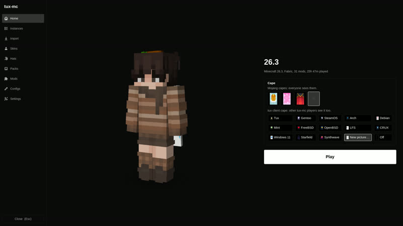
The mod
- Right Shift opens a menu with Network, Server, Waypoints, Emotes, Capes and Settings. The Server tab shows your queue position, its ETA and the server's TPS.
- Press the period key for an emote: wave, dance, sit, lay, clap, spin, bow or dab. Most keep going until you move. Other tux-mc players see them.
- In vanilla a click on air drops your next clicks for half a second. tux-mc turns that off. You can turn it back on under Settings, Combat.
- The game gets a login token that runs out after about a day. tux-mc gets a new one half an hour before that, so you can still join servers when the game has been open for days.
- /fill, /clone and /fillbiome take any size in singleplayer and LAN.
- Zoom on C, fullbright, a HUD, waypoints with death points, and your own picture behind the title screen.
Capes and hats
Thirteen capes come with the mod. Each one is painted at 2048 pixels wide, so the logos stay sharp up close. You can also make one from your own picture: drag it into place, zoom, rotate or flip it, and give it a name.
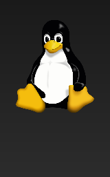
Tux- Gentoo
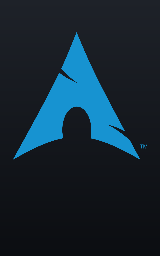
Arch- Debian
- Mint
- SteamOS
- FreeBSD
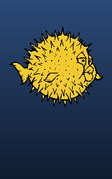
OpenBSD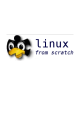
LFS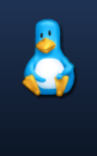
CRUX- Windows 11
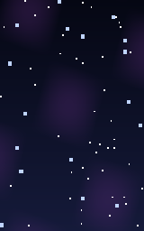
Starfield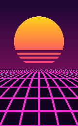
Synthwave
Hats are 3D models you build on your head, cell by cell, in the launcher. Start from a crown, cat ears, a top hat or an empty one, or import a MagicaVoxel file. A hat can be up to three times as tall as your head.
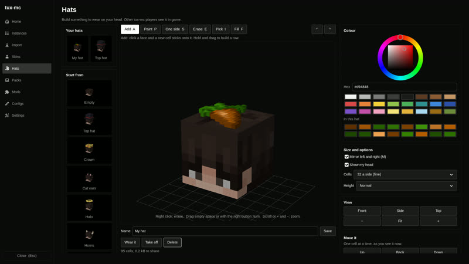
How other players see them
There is no tux-mc server. Your cape, hat and emotes go out as small messages through public Nostr relays, and other tux-mc players on the same server pick them up. Each message is signed with the chat key Mojang gives your account, so nobody can put a cape on someone else. Players never connect to each other, and the server address is only sent as a hash.
The launcher
- Instances of any Minecraft version, snapshots too, with Vanilla, Fabric, Quilt, NeoForge or Forge. Import from the official launcher, CurseForge, the Modrinth App or Prism.
- Turn mods on and off, drop jars in, or search Modrinth. Every download is checked against its SHA-512.
- Make a resource pack without another program: find a texture by name and paint on it.
- Pick a theme, or three colours, or take them from a picture. Prism and the game's menus follow it.
- Settings for RAM up to what the computer has, Java arguments, the game window and updates.

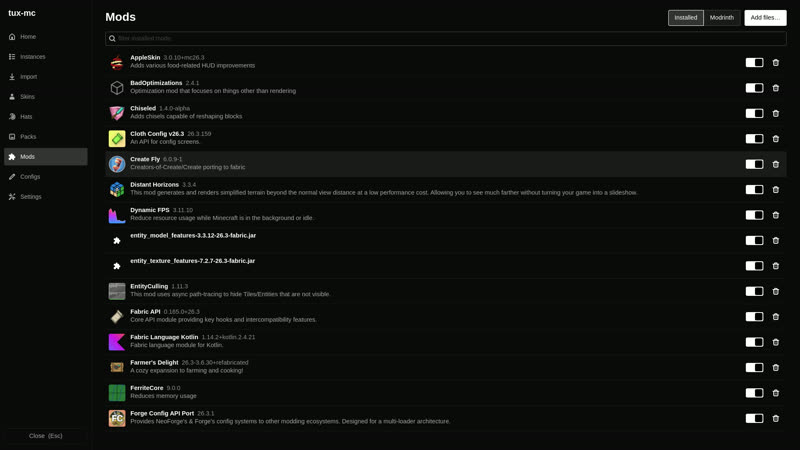

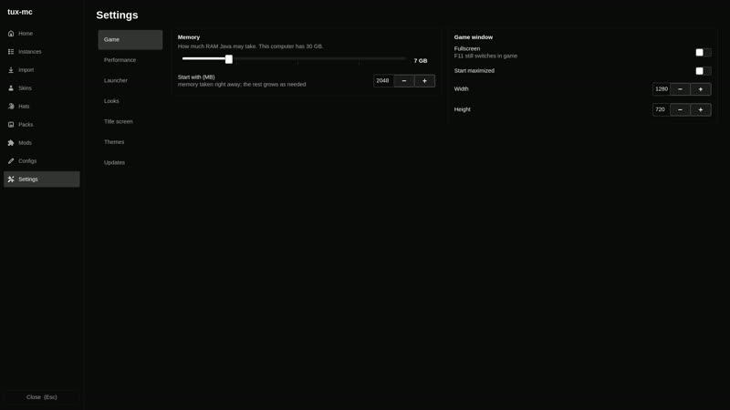
What it does with your account
- Your Microsoft login stays in Prism Launcher's own file. tux-mc reads it and never writes it.
- New login tokens only live in memory. When the launcher starts the game itself, the token goes in through a pipe, never on the command line, where other programs could read it.
- The launcher only talks https, redirects included, and stops on answers that are far too big.
- Updates and mods are checked against their SHA-256 or SHA-512 before they replace anything.
Install
You need a Microsoft account that owns Minecraft: Java Edition.
Windows
Download tux-mc-windows.zip, unzip it and double-click install.bat. It gets Prism Launcher if you don't have it and walks you through signing in.
Linux
You need a C compiler and the gtk4, json-glib and libcurl headers.
git clone https://github.com/sekyuraj/tux-mc
cd tux-mc
./install.shinstall.sh gets Prism Launcher, makes a 26.3 Fabric instance, adds Fabric API, Sodium and tuxmc.jar (each checked against its checksum), and installs the tux-mc command.
tux-mc is not made by or connected to Mojang or Microsoft. Report a bug.